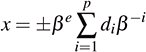

12.2. Representing Floating-Point ValuesFloating-point math is tricky, and most programmers don't understand it well enough to use it correctly. Since I'm in that group, I'm not going to write about how to get accurate results from complex computations.[4]
12.2.1. The Floating-Point ModelThe C99 standard uses an abstract model to describe the representation of floating-point values. A floating-point value x is represented as:  where β and p are characteristics of the floating-point representation (float, double, or long double).
The values of e and the various d is are determined by the particular value being represented.
For example, .602 x 1024 represents a value in base 10 (β = 10) having three significant digits (p = 3). Its digits are 6, 0, and 2 (d1 = 6, d2 = 0, and d3 = 2); its exponent is 24 (e = 24); and its significand is .602. A floating-point value is normalized if its value is 0 or if d 1 > 0.[5] So .602 x 1024 is normalized, and .0602 x 1025, even though it represents the same value, is not. A floating-point value is denormalized if its value is not 0 and d1 = 0.
12.2.2. Properties of Floating-Point TypesC and C++ provide three floating-point typesfloat, double, and long doubledistinguished by the range of values that the type can represent. Sometimes it's important to know the limits on these ranges. You can find these limits in two ways: In C and C++, you can use the macros defined in the header <float.h>[6] (as well as <cfloat> in C++); in C++, you can also use the numeric_limits template defined in the header <limits>. Table 12.1 lists the macros and numeric_limits members that describe the fundamental properties of the type double.[7] The resulting values are all compile-time constants.
The four values in Table 12.1 completely describe the numbers that can be represented as normalized values. However, since most uses of floating-point math involve decimal values, it's convenient to have decimal approximations[8] of the precision and minimum and maximum exponents. The code for these properties is in Table 12.2. These values, too, are all compile-time constants.
Three other values are important when you need to understand the results of a floating-point computation. Access to the minimum and maximum floating-point values and another way of handling precision are described in Table 12.3. The values that you get from the C macros are compile-time constants; the values from the numeric_limits template are not.
12.2.3. Floating-Point TypesThe C and C++ standards give mimimum or maximum values for several of the properties described in the previous section.[9] The requirements for float result in a smaller range and less precision than the requirements for double; the requirements for long double are the same as the requirements for double, but some implementations provide a larger range and more precision. These requirements are listed in Table 12.4.
For an implementation that conforms to the IEC 60559 Standard [Int89], the requirements given in Table 12.5[10] apply. Again, the requirements for long double are the same as for double.
|
 (
(